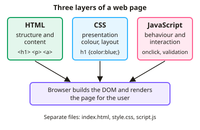

A-level Computer Science Year 12 · Topic 16
Web technologies
Web technologies explains how web pages are built, processed and found.
We will use H T M L, C S S and JavaScript, and compare client side and server side processing.
Then we see how search engines index the web, and how the PageRank algorithm ranks pages.
- 3 subtopics
- 80 questions
- Free: 16.1 notes and 10 questions
In this topic
- 16.1HTML, CSS and JavaScriptFree below · 28 questions
- 16.2Client-side and server-side processingOpen in Full Marks · 24 questions
- 16.3Search engine indexing and the PageRank algorithmOpen in Full Marks · 28 questions
16.1 · Free notes
HTML, CSS and JavaScript

Key points
- HTML (HyperText Markup Language) is the markup language that defines the structure and content of a web page using tags and elements, e.g. <h1>, <p>, <a href>, <img src alt>, <table>, <form>.
- HTML elements can have attributes: href gives a link destination, src gives an image source, alt gives alternative text, and id and class label elements so CSS or JavaScript can target them.
- HTML forms collect user input (<input>, <select>, <textarea>). The action attribute sets where data is sent, and method="get" appends data to the URL while method="post" sends it in the request body.
- CSS (Cascading Style Sheets) controls presentation: colour, fonts, spacing and layout. A rule is written selector { property: value; }, e.g. p { font-size: 14px; }.
- CSS selectors target elements (p), classes (.alert) and ids (#menu). Where rules conflict, specificity and the cascade decide, and an inline style normally overrides an external rule.
- CSS can be inline, internal (<style> in the head) or external (a .css file linked with <link>). An external stylesheet is best practice because one edit restyles every page and gives consistency.
- Separation of content and presentation (HTML for content, CSS for style) makes sites easier to maintain, reuse and make accessible, and keeps file sizes smaller.
- JavaScript is a scripting language run by the browser, usually interpreted and event-driven. It adds behaviour and interactivity and is placed in <script> tags or an external .js file.
- JavaScript can manipulate the DOM (Document Object Model), the tree of page elements. For example, document.getElementById("x").innerHTML = "Hi" changes an element's content without reloading the page.
- Typical JavaScript uses are event handlers (onclick, onsubmit), form validation, animation and updating content dynamically, for example by AJAX.
- Exam tip: match each language to its role, HTML = structure, CSS = style, JavaScript = behaviour. Be ready to read or write short snippets of each.
In more detail
- Worked HTML: <a href="page.html">Next</a> makes a link; <img src="cat.jpg" alt="A cat"> shows an image with alternative text; <ol><li>…</li></ol> makes a numbered list.
- Worked CSS: #main { width: 80%; } styles the one element with id main; .warning { color: red; } styles every element in the class warning.
- Worked JavaScript: document.getElementById("total").innerHTML = price × qty; updates part of the page without reloading it.
- Worked validation: JavaScript can check that a form field isn't empty before the form is submitted.
- Worked external stylesheet: <link rel="stylesheet" href="style.css"> lets one file style every page on a site.
Practice
HTML, CSS and JavaScript: 10 questions
Pick an answer to check it, or open the answer for the explanation.
1. Which technology defines the structure and content of a web page?
- HTML
- CSS
- HTTP
- JavaScript
Show answer
A: HTML. HTML uses tags and elements to define headings, paragraphs, links, images and forms. CSS handles presentation and JavaScript handles behaviour. HTTP is a transfer protocol, not a page language.
2. A developer wants to change the heading colour on all 50 pages of a site by editing a single file. Which is best?
- Inline style attributes on each heading
- <b> tags around each heading
- A <script> block on each page
- An external CSS stylesheet linked from every page
Show answer
D: An external CSS stylesheet linked from every page. An external stylesheet linked from every page means one edit changes all pages. Inline styles would need 50 separate edits and script blocks are not for styling.
3. style.css has h1 {color: blue;} but a page contains <h1 style="color:red">. What colour is that heading?
- Blue
- Black
- Purple
- Red
Show answer
D: Red. Inline styles have higher specificity than rules in an external stylesheet, so the inline red overrides the blue.
4. What does document.getElementById("total").innerHTML = "£5"; do?
- Applies a CSS rule to every element
- Creates a new HTML file called total
- Sends £5 to the server to be stored
- Changes the content of the element with id total in the DOM
Show answer
D: Changes the content of the element with id total in the DOM. It uses the DOM to find the element with id "total" and replaces its content, without reloading the page. It does not contact the server.
5. Which HTML attribute supplies text to show if an image cannot be displayed?
- alt
- title
- href
- src
Show answer
A: alt. The alt attribute holds alternative text for when the image fails to load and for screen readers. src is the image location and href is a link destination.
6. Which statement about JavaScript in a web page is correct?
- It can run in response to events such as a button click
- It is used to create database tables
- It must be compiled to machine code before download
- It only defines the layout of the page
Show answer
A: It can run in response to events such as a button click. JavaScript is event-driven and is normally interpreted by the browser. Layout is CSS, and database tables are created on a server.
7. A form uses method="get" to submit a search term. Where is the data sent?
- In the URL as a query string
- Only inside an encrypted body
- Inside the CSS file
- Directly into the database
Show answer
A: In the URL as a query string. GET appends the form data to the URL, so it is visible and can be bookmarked. POST puts it in the request body. Neither method encrypts data by itself.
8. Which HTML correctly makes a table row containing two data cells?
- <row> containing two <cell>
- <td> containing two <tr>
- <th> containing two <table>
- <tr> containing two <td>
Show answer
D: <tr> containing two <td>. <tr> is a table row and <td> is a table data cell, so a row contains cells. <row> and <cell> are not HTML elements.
9. Why is separating CSS from HTML considered good practice?
- It encrypts the HTML
- It stops JavaScript being used
- It lets presentation change without altering content
- It lets pages load without a server
Show answer
C: It lets presentation change without altering content. Separating content and style means the look can be changed in one place without editing the page content, which improves maintainability, consistency and accessibility.
10. Which HTML attribute is used to run JavaScript when a user clicks a button?
- class
- href
- action
- onclick
Show answer
D: onclick. onclick is an event handler attribute that runs a script when the element is clicked. action is for forms, href for links and class for CSS targeting.
Keep going in Full Marks
Full Marks has 28 questions on HTML, CSS and JavaScript (18 more than here), set out in practice levels. You also get notes and 3D models for all 3 subtopics of Web technologies, plus games, timed exams and past papers.
On your exam board
Not in the AQA and Cambridge specifications.